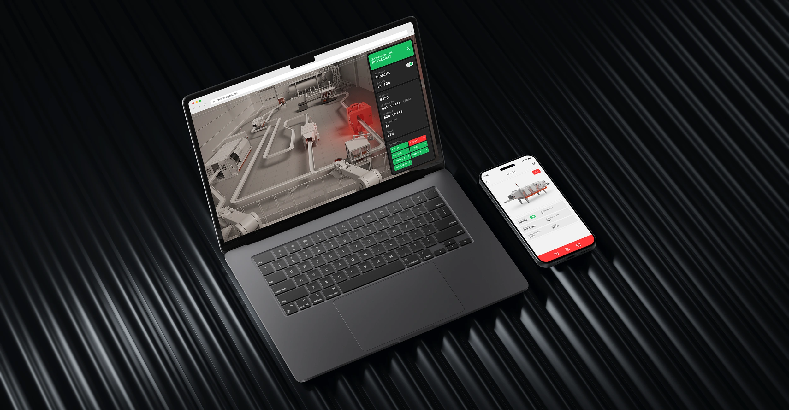
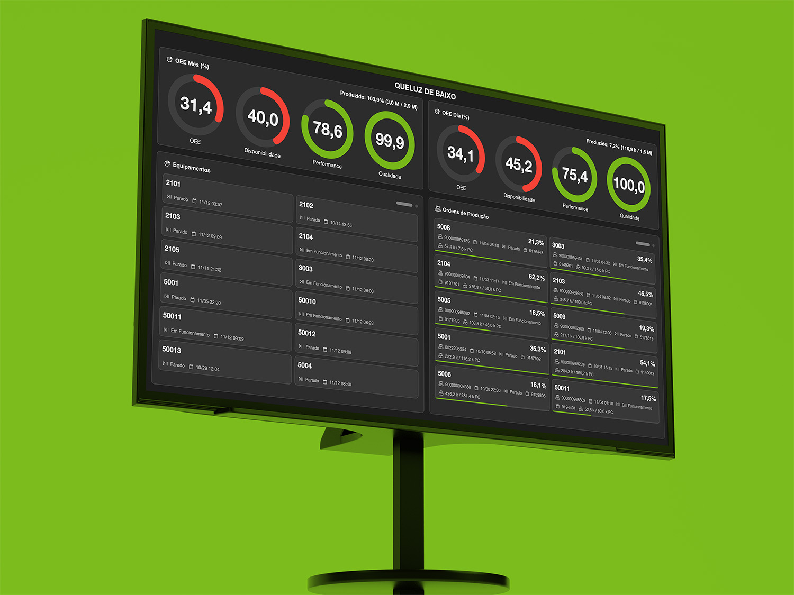
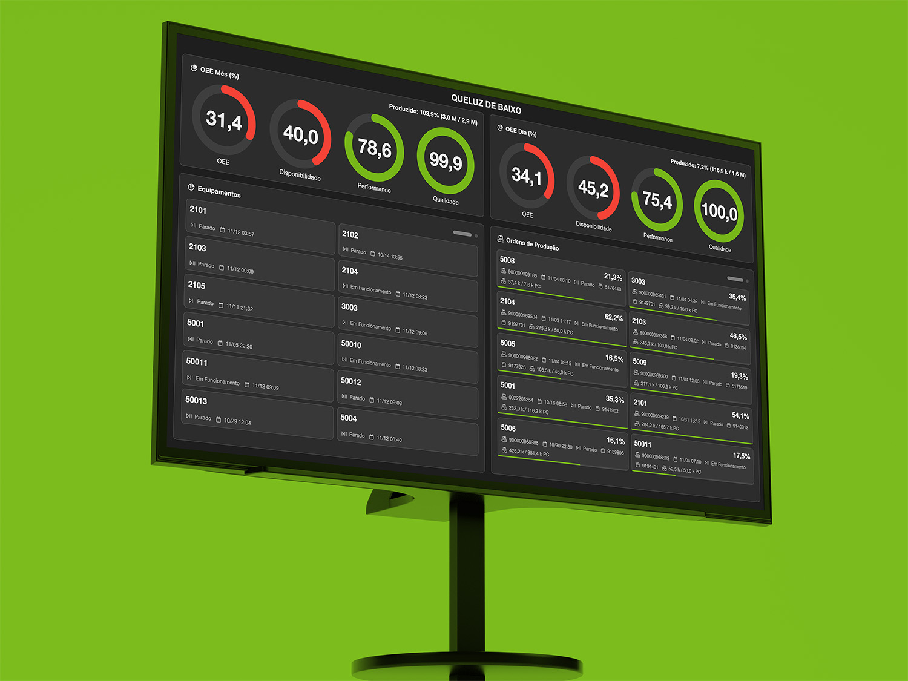
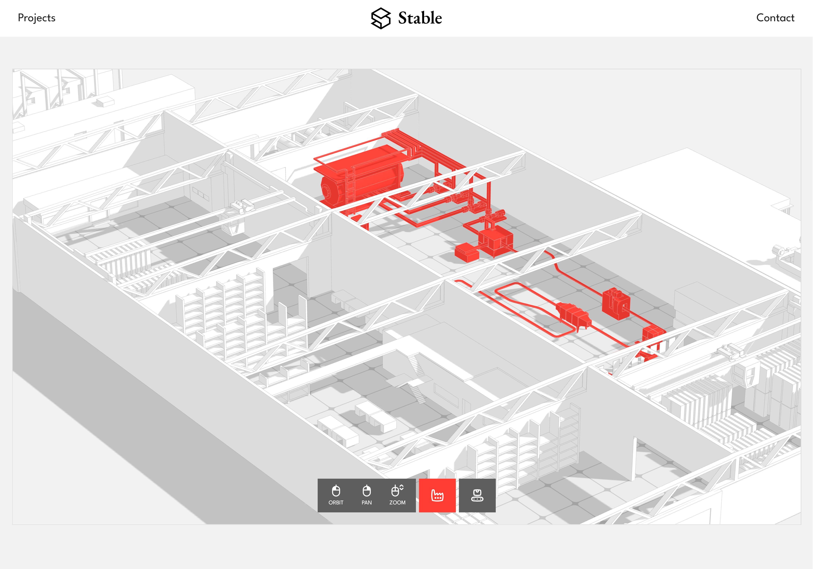
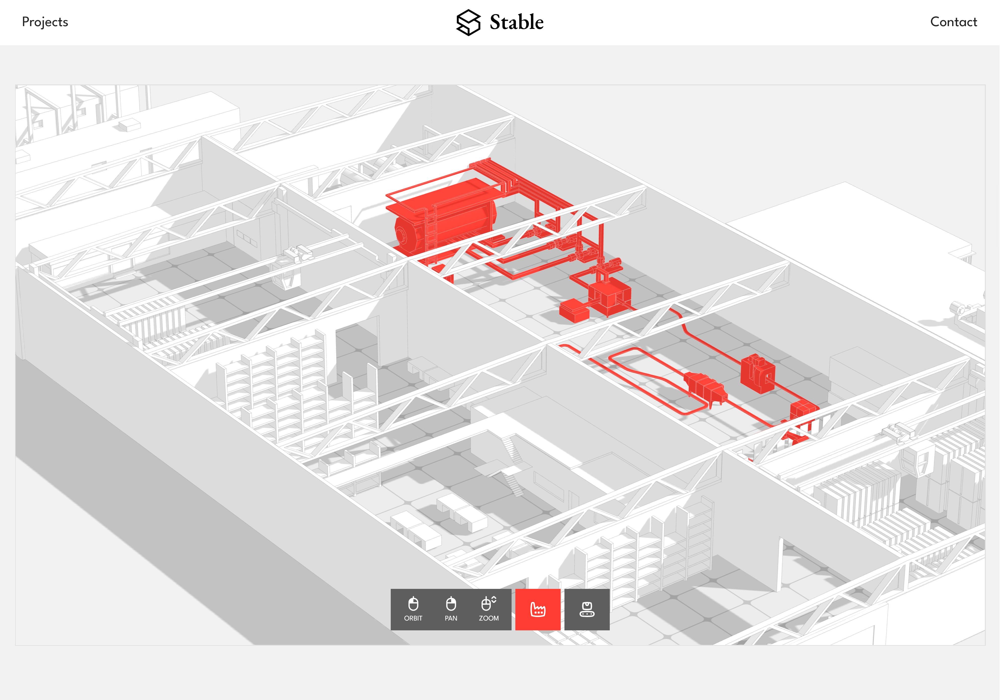
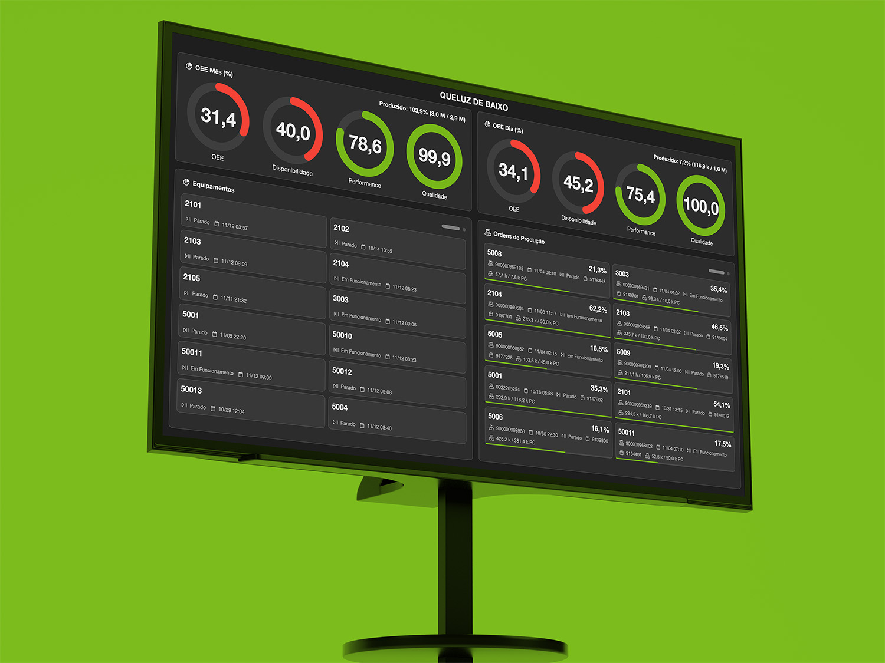
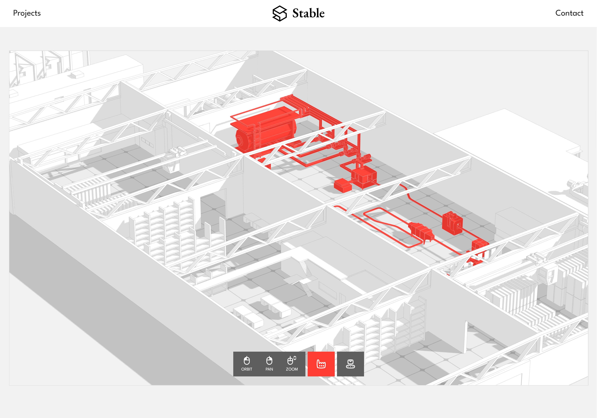

BREITNER & PAYNE
This project is an in-depth exploration of a digital twin. Unreal Engine allows for an immersive experience — not just viewing the factory floor, but interacting with it too.
JSON data communication between the Unreal server, client computer, and mobile app enables users to move around the factory, interact, and control the machines remotely.
JSON data communication between the Unreal server, client computer, and mobile app enables users to move around the factory, interact, and control the machines remotely.
▪ Targeted at factory management
▪ Machine data updates in real time
▪ Client access via web browser
▪ Custom modeled production line
▪ Custom modeled factory and outskirts
▪ Mobile app interaction with engine
▪ Machine data updates in real time
▪ Client access via web browser
▪ Custom modeled production line
▪ Custom modeled factory and outskirts
▪ Mobile app interaction with engine
→ MORE
4040 CITADEL PARK
A showcase for a new business, residential and comercial complex development.
Focusing both in and outwards, the project explores multiple stores, offices and amenities inside the complex, as well as landmarks throughout the 30,044km2 cityscape.
Focusing both in and outwards, the project explores multiple stores, offices and amenities inside the complex, as well as landmarks throughout the 30,044km2 cityscape.
▪ Targeted at construction companies and real estate developers
▪ Search for available apartment unities →
▪ Packaged program, executable on any client PC
▪ User can walk around one fully furbished office unity →
▪ Custom modeled surroundings →
▪ Search for available apartment unities →
▪ Packaged program, executable on any client PC
▪ User can walk around one fully furbished office unity →
▪ Custom modeled surroundings →
→ MORE
PLANO ALTO
Using Unreal Engine VCam Mobile App, this Plano Alto apartment is presented with real camera movement and cinematic takes.
The phone’s motion was captured as camera tracking data, which directly drove the movement of the virtual camera inside the scene.
The phone’s motion was captured as camera tracking data, which directly drove the movement of the virtual camera inside the scene.
▪ Targeted at real estate firms
▪ Virtual walk tour video to be reproduced anywhere →
▪ Cinematic bonus video to highlight the space →
▪ Cinematic narration using ElevenLabs AI →
▪ Textured with Megascans
▪ First time texturing, rendering and animating in Unreal Engine
▪ Virtual walk tour video to be reproduced anywhere →
▪ Cinematic bonus video to highlight the space →
▪ Cinematic narration using ElevenLabs AI →
▪ Textured with Megascans
▪ First time texturing, rendering and animating in Unreal Engine
→ MORE
MOBILE APPS
As the solo frontend dev / designer at ThinkDigital, one of my roles is to design our apps interface and develop them alongside my backend team.
Over the past couple of years I've been working on a suite of mobile web apps that tackle different needs of our industry clients. Users are usually workers on the factory floor.
These apps are already deployed and in active use by our clients.
Over the past couple of years I've been working on a suite of mobile web apps that tackle different needs of our industry clients. Users are usually workers on the factory floor.
These apps are already deployed and in active use by our clients.
▪ 8 Apps developed
▪ Production oversight and control (purple)
▪ Stock management (green)
▪ Fleet monitoring (magenta)
▪ Finished product expedition
▪ Maintenance workflow templating
▪ Ticket management
▪ Production oversight and control (purple)
▪ Stock management (green)
▪ Fleet monitoring (magenta)
▪ Finished product expedition
▪ Maintenance workflow templating
▪ Ticket management
VIDEOWALS
Videowalls continuously presents key operational metrics and status on a work environment large-format display.
A web-based, plug and play solution that gives the entire team instant visibility into critical information.
These videowalls are already deployed and in active use by our clients.
A web-based, plug and play solution that gives the entire team instant visibility into critical information.
These videowalls are already deployed and in active use by our clients.
▪ 13 Videowalls developed
▪ Production status
▪ OEE and other metrics
▪ Personel oversight
▪ Product expedition schedule
▪ Production status
▪ OEE and other metrics
▪ Personel oversight
▪ Product expedition schedule
STABLE WEBSITE
After years in web development, I felt i had seen it through. My focus shifted to 3D — specifically architectural visualization.
Stable Archviz is where all my archviz work lives. The website relies on visual content and minimal text.
Stable Archviz is where all my archviz work lives. The website relies on visual content and minimal text.
▪ Targeted at architectural firms and real estate developers
▪ Compiles still images, videos and 3D models
▪ Interactive 3D models using Three.js
▪ Smooth scroll and subtle animations using GSAP
▪ Compiles still images, videos and 3D models
▪ Interactive 3D models using Three.js
▪ Smooth scroll and subtle animations using GSAP
→ MORE
THREE.JS
Three.js is the intersection between 3D and Web Design. It allows me to present 3D without converting it back to 2D.
Having a 3D project catalog at Stable, Three.js is my favorite way to include models in the website.
Having a 3D project catalog at Stable, Three.js is my favorite way to include models in the website.
PRODUCT DESIGN
At ThinkDigital we develop both soft and hardware for business instrumentation purposes.
On the hardware side, my role was to use the 3D models from the manufacturer to render out product images used in the prototyping and marketing stages.
On the hardware side, my role was to use the 3D models from the manufacturer to render out product images used in the prototyping and marketing stages.
▪ Renders made in Cinema4D and later 3ds Max
▪ Interior parts created from .step files from the hardware team
▪ Product labeling created in Illustrator
▪ Interior parts created from .step files from the hardware team
▪ Product labeling created in Illustrator
VIDEOWALL UI
We architect your go-to-market strategy
combining corporate positioning, product design,
and operational readiness.
Through rapid iteration, market validation, and data-driven refinement, we accelerate your path to product-market fit and investor readiness.
Through rapid iteration, market validation, and data-driven refinement, we accelerate your path to product-market fit and investor readiness.
▪ key feature
▪ key feature
▪ key feature
▪ key feature
▪ key feature
▪ key feature
▪ key feature
IT SEEMS LIKE WE'VE REACHED THE END
OF MY PROFESSIONAL CAPABILITIES
OF MY PROFESSIONAL CAPABILITIES
DESIGNED BY
Matheus Monteiro
DEVELOPED BY
Matheus Monteiro
VISUAL CONTENT
Matheus Monteiro
CONSULTANT
Claude
BUT PERHAPS THERE ARE OTHER RELEVANT THINGS
APART FROM COMPUTER SKILLS
APART FROM COMPUTER SKILLS
PLACES
natural
BRAZIL
exchange study
SPAIN
lived
IRELAND
living
PORTUGAL
EDUCATION
university
SÃO PAULO STATE UNIVERSITY (UNESP)
bachelor
ECONOMICS
WORK
(2019-2020)
dublin
THE GALWAY HOOKER PUB
(2020-2025)
aveiro
THINKDIGITAL
MOVIES
favorite
PARIS, TEXAS
second
THE SHAWSHANK REDEMPTION
third
SUPERBAD
TV SHOWS
favorite
BREAKING BAD
second
NORMAL PEOPLE
third
JOE PERA TALKS WITH YOU
GAMES
favorite
RED DEAD REDEMPTION 2
second
OUTER WILDS
third
CONTROL
TOUCH GRASS
favorite
TENNIS
second
COOKING
third
WOODWORKING (i’m getting old)
THANK YOU
2023-2025
3D
UX UI & DEV
THREE JS
2021-2022
PRODUCT DESIGN
GRAPHIC DESIGN
VIDEO CONTENT
WEB DESIGN



 

 




